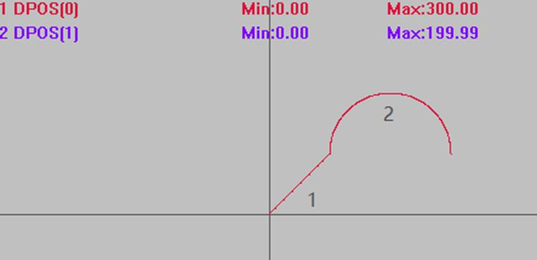

|
类型 |
多轴运动指令 |
|
描述 |
两轴圆弧插补，三点画弧，相对运动。
BASE第一轴和第二轴进行圆弧插补，相对移动方式，坐标为相对起始点的距离。 自定义速度的连续插补运动可以使用SP后缀的指令，见*SP描述。 注意：不能用此指令进行整圆插补运动，整圆使用MOVECIRC相对圆弧，或连续使用两条此类指令。 |
|
语法 |
MOVECIRC2(mid1, mid2, end1, end2) mid1：中间点第一个轴坐标，相对起始点距离 mid2：中间点第二个轴坐标，相对起始点距离 end1 ：结束点第一个轴坐标，相对起始点距离 end2 ：结束点第二个轴坐标，相对起始点距离
坐标位置请确保正确，否则实际运动轨迹会错误。 |
|
适用控制器 |
通用 |
|
例子 |
BASE(0,1) ATYPE=1,1 '设为脉冲轴类型 UNITS=100,100 DPOS=0,0 SPEED=100,100 ACCEL=1000,1000 DECEL=1000,1000 TRIGGER '自动触发示波器 MOVE(100,100) '运动100，100位置 MOVECIRC2(100,100,200,0) '三点画半圆，相对坐标
插补轨迹 DPOS(0)垂直刻度200 DPOS(1)垂直刻度200  |
|
相关指令 |